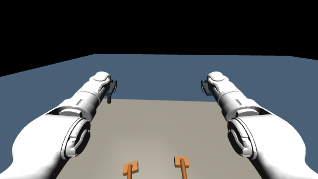
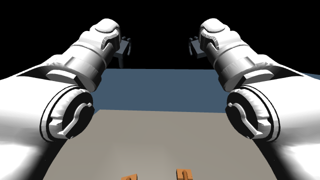
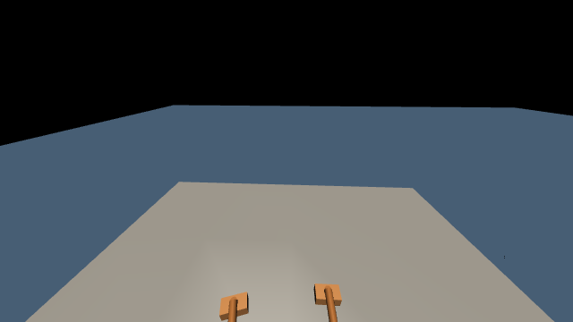

1. 系统与任务
GPT-6-Astra 参与机器人表演运行期间的反馈决策。机器人执行一段运动后，系统从当前 MuJoCo 状态生成第一视角 RGB 图像，并读取关节位置、机身速度、重力方向、夹爪位移及手足接触力。当前 Codex 会话中的 GPT 接收这些新观测，结合完整表演任务和此前执行结果，判断是否继续当前阶段程序提出的动作、执行多长时间以及何时再次观察。有效决策到达后，仿真继续推进，形成反复更新的观测—决策—执行闭环。
该闭环贯穿登台、拾架、搬运、放架、俯卧撑和跳跃等阶段。本轮连续运行保存了 53 组观测编号对应的 GPT 决策，包含对新图像与本体状态的判断，以及实际采用的执行窗口。任务顺序由阶段程序辅助，关节参考和电机输入由已有 locomotion、IK、支撑控制与 PD 产生。
第一视角和本体状态取自每个检查点的当前物理状态。GPT 决策期间暂停仿真，收到有效动作后继续运动；下一次检查点再提供新的反馈。因此，本系统实现的是事件触发的在线暂停步进控制，尚未验证物理持续运动时的墙钟实时推理。
- ① 当前观测机器人第一视角
本体状态与手足接触 - ② GPT 在线决策执行或终止
执行窗口与可用参数 - ③ 运动控制locomotion / IK
接触支撑与 PD - ④ MuJoCo 推进电机驱动与物理积分
产生新的机器人状态
场景采用 Unitree G1，包含 29 个身体转动关节、2 个滑台夹爪以及可自由运动的两只支架。模型具有 52 维广义位置、49 维广义速度和 31 维执行器输入；身体关节使用力矩驱动，夹爪使用直线驱动力。
- 登台与搬运：机器人登上舞台，走到支架前，停稳后弯腰握架并起身，再原地转向舞台中心并搬运。
- 放置与展示：在中心停下，将支架放到面前，松手并起身，完成第一次秀肌肉后恢复自然站立。
- 支架俯卧撑：下蹲并前伸双臂握架，逐腿后伸并稳定支撑，曲臂下降、推起，逐腿收回，松手并起身。
- 跳跃与谢幕：双臂后摆并屈膝，前摆双臂并起跳，落地站稳后完成最终秀肌肉。
2. GPT 运行时闭环
完整任务要求保留在 Codex 会话上下文中。仿真进程保持机器人、控制器和物理状态常驻，在检查点通过文件发布观测，Codex 使用工具读取图像与状态并提交决策。每一轮按以下顺序执行：
- 运动执行与触发。已有控制器根据上一次有效决策推进运动。在阶段转换检查点或指定窗口到期时，程序进入观测流程；底层动力学失败会单独触发终止。
- 获取当前第一视角和本体状态。程序复制当前关节位置与速度到渲染场景，生成相机图像，同时读取该检查点的本体与接触摘要。图像、仿真时间和状态使用同一观测编号保存。
- 将新观测交给 GPT。仿真发布 observation_NNN.json 和 ego_NNN.png，并等待动作。当前 Codex 会话读取 JSON 与对应图像；GPT 综合任务要求、视觉、接触状态、身体稳定性及上一轮决策作出判断。
- 生成下一段执行决策。GPT 输出当前观测编号、是否执行、执行窗口、速度比例、控制后端和判断理由。窗口决定下一次反馈的最晚检查时刻，阶段转换可提前触发反馈。
- 校验与执行。程序检查编号、参数范围和阶段允许的后端。有效动作允许继续物理推进；明确拒绝执行、无效动作或等待超时会终止本次运行。未收到决策时不推进物理时间。
- 反馈更新。运动产生的新状态用于下一轮读图与判断。观测、决策、控制输入和实际轨迹均分别保存，可按观测编号追溯。
本轮由 Codex 会话通过工具完成逐次文件交互，未调用独立模型 API 服务。校准模式会由程序生成固定参数并标记为 calibration；本页展示的 codex_full_001 使用 codex 来源记录。
2.1 GPT 接收的观测
虚拟相机固定于 torso_link，局部位置为前向 0.095 m、上方 0.40 m，朝前下倾 25°，垂直视场为 90°。原始 RGB 图像分辨率为 640 × 360。相机未经真实传感器标定。
- 图像与观测编号、全局仿真时刻及阶段程序提出的下一动作。
- 29 个身体关节的位置、机身坐标系下的重力方向和线速度。
- 双手、双脚的接触力摘要，以及两个夹爪的位移。
- 上一次决策及当前阶段允许使用的控制后端。
| 观测量 | 维度 | 用于运行时判断 |
|---|---|---|
| 第一视角 RGB | 360 × 640 × 3 | 支架与台面的相对位置、手与杆的关系，以及运动前后视野变化。 |
| 身体关节位置 | 29 个角度 | 辅助确认站立、下蹲、伸腿与定姿状态。 |
| 机身速度与重力方向 | 各 3 维 | 辅助判断身体运动、倾斜与稳定程度。 |
| 手足接触力摘要 | 4 个数值，依次为左手、右手、左脚、右脚 | 判断手部承重、单腿离地及重新落脚。 |
| 夹爪位移 | 2 个数值 | 辅助确认闭合与释放状态。 |
| 任务与阶段信息 | 文本及结构化字段 | 结合完整任务、建议阶段、上一决策与可用控制后端确定执行意图。 |
观测 JSON 不直接提供舞台或支架的世界坐标。底层 IK 使用仿真几何信息，开发会话也可接触运行日志中的世界坐标，因此本实验不构成特权信息隔离的纯视觉盲测。
2.2 GPT 输出与控制作用
| 字段 | 含义与约束 |
|---|---|
| observation_id | 必须对应当前观测编号，过期动作被拒绝。 |
| execute | 批准执行或显式终止；终止不能记作任务完成。 |
| horizon_s | 0.1–8 s 的仿真执行窗口；阶段转换可以提前触发下一观测。 |
| speed_scale | 0.8–1.2 的行走速度比例；波比跳接触动作固定为 1，保持内部时序。 |
| controller | 选择当前阶段可用的控制后端；本轮完整实验均使用已有运动后端。 |
| reason | 保存依据当前图像与本体状态作出的执行判断。 |
动作先写入临时文件，再原子重命名，避免仿真读取不完整数据。缺失决策、超时、无效参数或动力学失败均显式记录并终止。本轮 GPT 共提交 53 次决策，在落地附近将执行窗口缩短至 0.2 s。
执行窗口控制两次 GPT 观测之间允许推进的仿真时长，窗口缩短会提高观察密度。execute 为真时继续建议阶段，为假时终止整次运行；该接口未提供任意阶段重排或替换动作路径。窗口到期发生在下一个控制检查点，时间精度受底层控制步长限制。
本轮实际使用情况：53 次决策均批准执行，速度比例均为 1.0，控制后端均为 legacy；GPT 根据执行进展选择了不同的观察窗口，并记录了观测判断。速度调整、后端切换和主动终止属于接口支持的能力，本轮未实际触发。接触动作内部的参考路径、支撑条件及动作顺序由已有程序执行。
2.3 实例：根据落地反馈调整观察窗口
以下三次连续决策来自本轮真实运行。图像和状态取自各自检查点，文字为动作文件中保存的 GPT 判断；仿真时刻不包含模型等待的墙钟时间。
观测 49 · 147.012 s

左、右足接触力：280.6 / 271.9 N。机身坐标系线速度：(-0.4851, -0.0050, -0.3517) m/s。
GPT 记录的判断：双臂已前摆，当前双足有明显接触力而身体仍向下运动，处于落地缓冲附近；只推进0.2秒检查冲击衰减。
下发动作：继续执行，窗口 0.2 s，速度比例 1.0，后端 legacy。
观测 50 · 147.212 s

左、右足接触力：217.7 / 212.6 N。机身坐标系线速度：(-0.0238, -0.0071, -0.1302) m/s。
GPT 记录的判断：姿态已回到近竖直，双足均衡接触但仍有下降速度；继续落地缓冲与回臂，暂不提前定姿。
下发动作：继续执行，窗口 2 s，速度比例 1.0，后端 legacy。
观测 51 · 149.212 s

左、右足接触力：172.9 / 171.3 N。机身坐标系线速度：(0.0010, 0.0000, -0.0001) m/s。
GPT 记录的判断：双臂已收回，双足各约172N，身体速度约1毫米每秒，已恢复自然稳定站立；允许完成稳定判定并进入最终定姿。
下发动作：继续执行，窗口 2 s，速度比例 1.0，后端 legacy。
在 147.012 s 的检查点，GPT 结合双足载荷与身体仍在下降的状态，将窗口缩短为 0.2 s。程序推进到 147.212 s 后再次提供观测，GPT 继续允许落地控制运行 2 s。149.212 s 的反馈显示身体速度已很低，GPT 批准继续完成稳定判定；后续阶段程序满足稳定条件后提出最终定姿，并再次请求 GPT 决策。这一过程对应观测更新、模型判断和继续执行的连续闭环。
全部 53 次决策保存在原始决策日志中。实例说明本轮实际采用的在线监督方式，动作完成程度与物理质量仍按第 5 节的独立审计结果报告。
3. 运动执行
GPT 的输出作用于运动段的执行许可和参数。任务顺序由已有阶段程序辅助，GPT 尚未独立生成全部阶段或高频电机命令。
- 行走与转向：已有预训练 locomotion policy 根据局部运动命令产生腿部关节目标；停止、落脚调整和负载搬运采用已验证的控制参数。
- 拾取与放置：IK 根据手腕、握杆、足底及身体姿态约束生成运动参考，夹爪通过真实接触夹持支架。放置时保持夹持并等待底座稳定，再松手与撤手。
- 支撑转换与俯卧撑：复用已有全身参考、IK 与接触力控制。逐腿后伸和收回分别具有落脚稳定阶段，手足接触力和机身速度用于检查支撑条件。
- 跳跃与定姿：已有摆臂、屈膝、伸腿和落地控制器产生关节目标；落地后的双足接触与身体速度满足稳定条件后进入最终定姿。
- 电机执行：关节位置与速度误差经 PD、必要的支撑补偿及力矩限幅转换为执行器输入。夹爪保留独立位置控制与驱动力限幅。
控制入口为 online_hybrid.py，搬运和波比跳分别调用 refine_stage_transport.py 与 continue_stage_performance.py。参考轨迹用于运动目标生成，实际机器人状态始终由动力学积分推进。
4. 动力学与时钟
物理积分步长为 0.0001 s。搬运控制以 0.002 s 为一步，波比跳控制以 0.004 s 为一步；GPT 的决策频率由阶段转换及执行窗口决定。模型等待期间暂停物理积分，系统属于在线暂停步进闭环，尚未验证墙钟实时控制。
搬运从全新场景初态执行。搬运和波比跳通过完整 mjSTATE_INTEGRATION 状态衔接，逐元素验证关节位置、速度、执行器及求解器状态一致，仅重置局部时间原点。本轮动力学状态衔接最大误差为 0，场景模型完全一致。
决策日志中的等待时间包含模型推理、工具调用与开发等待，不能作为纯模型推理延迟。仿真视频按物理时间播放，省略决策期间物理未推进的墙钟等待。
5. 实验结果
实验 codex_full_001 完成从初始站立到最终定姿的连续阶段执行，共 155.908 s 仿真与 53 次 Codex 在线决策。搬运段全部现有检查通过；在线记录及完整状态衔接审计通过。跳跃检测到至少 0.120 s 双脚腾空，双脚共同离台间隙最大约 2.43 cm，最终 1 s 的身体速度和足底负载满足稳定性检查。
在线审计记录与运行结果保存本轮实验的检查结果。完整阶段执行与严格质量验收分别报告。波比跳段仍存在以下未通过项，实验保留原有判据。
| 指标 | 实测 | 现有判据 |
|---|---|---|
| 支架最大位移 | 9.14 cm | 不超过 3 cm |
| 累计自接触 | 44 ms | 不超过 10 ms |
| 最大关节速度 | 标称限制的 1.062 倍 | 不超过标称限制 |
| 右腿横向偏移 | 后伸 5.55 cm，收回 6.74 cm | 不超过 5 cm |
| 俯卧撑推起后的肘角 | 约 161–164°；下降时约 110–114° | 推起后双肘均大于 165° |
| 双手夹持几何有效比例 | 53.9% | 至少 90% 的样本同时满足位置与轴向约束 |
两腿均记录到依次伸收、离地与落地；推起恢复到本轮准备姿势附近。上述过程记录保留了动作完成程度，也保留了严格运动质量检查未通过的结果。
6. SONIC 适配
SONIC encoder 与 decoder 已通过 ONNX Runtime 接入本项目 MuJoCo 动力学。适配遵循配套的关节顺序、默认角度、动作缩放、PD 增益、10 帧本体感知历史和全身参考预览。encoder 输入为 1762 维，输出 64 维 motion token；decoder 输入为 994 维，输出 29 维身体关节动作，推理频率为 50 Hz。两只自定义夹爪保持独立控制。
tracking_002 完成 20 s 稳定参考跟踪，未触发跌倒、自接触或非预期接触，关节范围、速度与力矩检查通过。循环步态登台候选缺少目标位置和朝向纠偏，在 51.504 s 触发导航超时。本页展示的完整实验采用已有 locomotion 与 IK 后端，SONIC 未参与该完整运行。kinematic planner 尚未接入，SONIC 的导航和复杂握架接触能力仍需单独验证。
7. 记录与可视化
每次在线决策保存第一视角图像、观测 JSON、动作及理由；全过程保存关节状态、速度、控制输入、接触指标和阶段事件。在线审计检查编号、来源、观测文件及状态连续性，运动审计进一步检查逐腿运动、曲臂幅度、跳跃腾空和最终稳定性。
首页左侧展示第三人称视角，可切换运镜衔接和固定全景；右侧展示连续第一人称视角。两个视频来自同一轮实际轨迹，以 15 fps、848 × 480 分辨率渲染，使用相同时间轴同步播放、暂停、跳转及倍速。连续第一视角视频用于展示，GPT 实际读取的是逐次保存的 640 × 360 原始观测。渲染调整相机与天空外观，未替换物理状态或插入片段交叉淡化。